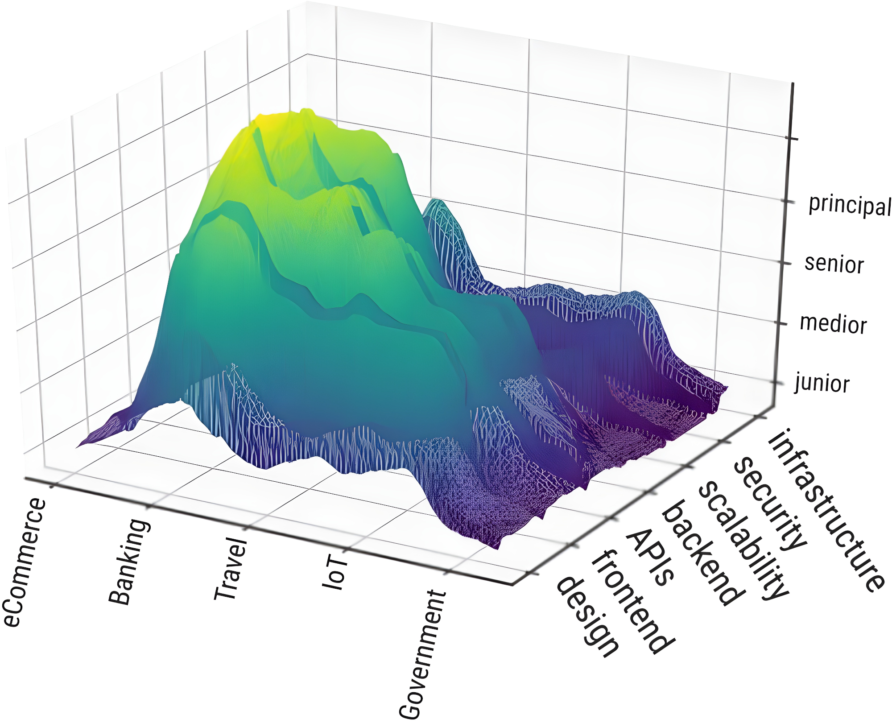

Your skills are domain specific

Skill graph
We want people to be like our code
Just explain, really slowly, what’s wrong with
them
for the problem to go away.
I’d love to have more software problems
but I really only have people problems.
Where to start?
at being better than that.
Communication frameworks
Algorithms for human interaction.
Nonviolent communication
- Observations
- Feelings (that’s the hard one!)
- Needs
- Requests
Separate emotions from the message,
and create mutual understanding.
The real power skill
effective communication